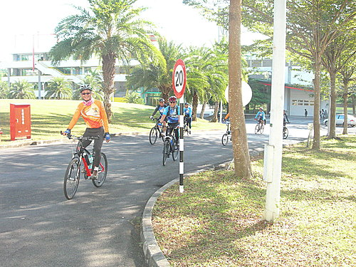
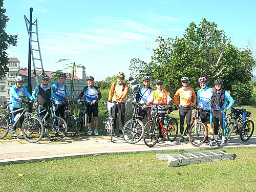
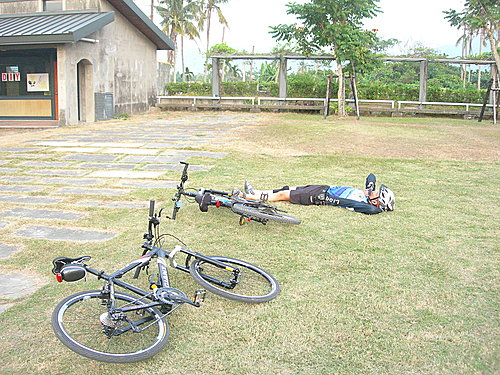

前次旭海行後，經過一個多月休養生息，河東大小獅們不免又開始腿癢難耐，期待帶頭大哥能再一次安排充實的單車行程。所幸Ｂ隊的富大及小獅聽到了，經過他們二位細心的行前安排，這次帶領大家到旗山、內門、美濃，在冬日暖陽下親身領略百年山城田野風光的自然之美，享受逐風而行的快感，來一次樂活單車之旅。這次參加的獅群，除了鎮隊之寶-宗哥、百里林哥、勇腳警長、車隊支柱的帥哥小揚、小超，還有新成員主任江哥、葉哥、雄哥等，以及小弟共11人。騎乘路線預定為：旗山-內門實踐大學-紫竹寺—觀音寺—田寮月世界—旗山—美濃—竹子門發電廠-黃蝶翠谷—美濃中正湖，約70公里。
行前英姿--大夥兒先自行駕車到旗尾紅蜻蜓農莊前整裝出發
冬日清晨還是頗有寒意，先在景觀橋前駐足賞景
首站從旗山到內門，自省道旁的林蔭大道，進入隱身在山中的實踐大學內門校區。

校園內繞行--這校園不大，但環境清幽，不失為一個讀書的好所在
校園內四壯士合影
下一站再到旁邊的紫竹寺
紫竹寺建廟已三百多年，是歷史古剎，也是台灣觀音信仰的中心，香火鼎盛，當然要去參拜一下 。不過此時超哥的車發生了小意外，一時無法趕上
。不過此時超哥的車發生了小意外，一時無法趕上

紫竹寺後花園步道--在這裡偶遇一位公路總局的大哥，邀請車隊拍攝交通安全宣導示範照片，請大家期待
居高臨下
咦？路在哪兒？公路總局的大哥要帶我們走捷徑，不過繞了半天還是沒有出去 ，還是謝謝他了
，還是謝謝他了
經過一段爬坡行程後，終於到了省道前的涼亭，超哥也在此時趕來會合
經過連續的渾汗爬坡後，在涼亭內小憩品茗，是最舒暢的事
又回到了景觀橋，準備吃飯了
農園裡花木扶疏
中午在旗尾紅蜻蜓農園用餐，透過富大的安排，大夥享用了豐盛的一餐，老闆特別拿出了不少私房菜
老闆還說隊友憑名片有沙必思，請自行列印取用
警長特別準備的餐後水果，粒粒飽滿，果實碩大，感恩
下午的行程到美濃，參訪竹門電廠，這是南台灣最早的水力發電廠
古董級的發電機和仿巴洛克風格的廠房，都被列國家級古蹟
典雅古樸的巴洛克風窗檻
感謝廠長熱心的介紹，隊友聚精會神，深怕遺漏精采環節
還有簡報.....猜猜小弟在做什麼
電廠參觀後，大夥兒又順道到龍肚地區的「一本書道院」
一進入這裡，即使在大太陽下，也能感到一股涼意，據說這地方的溫度較鄰近地區還要低個一至二度，靈氣逼人，是在大自然禪修的好地方。更棒的是，這裡還提供民宿，供遊客住宿泡湯(藥浴)，有興趣者可以來看看。
接下來已經下午4點左右，時間不早，只好跳過黃蝶翠谷，直接到新成立的美濃文物館
文物館前的草坪閒聊

與愛車共枕，也是人生的大享受
再來經過中圳湖，舊稱「中正湖」，是美濃的知名景點
最後在中圳湖前留影，活動成功。感謝未入鏡的雄哥為大家拍照
此次行程的落差圖：
下面連結是本次行程地圖，本來是要做內嵌式地圖，但輸入後只剩下面的連結，似乎雅虎未支援GOOGLE MAP，只好請大家自行點閱進入。
檢視較大的地圖 --請點我
貓哥， 學長描述遊記的功力果真一流，將我的腳踏車「花鼓」故障事件，鉅細靡遺的被記載在部落格裡。但這次故障不能算是小事件，更換花鼓就花了2千元，幸運的是這花鼓已陪伴我遨遊台灣5千公里，且在環島前壽終正寢，而不會耽誤環島之進行。在此要再次感謝江哥提供「名駒」供我完成下午行程，「ＸT」騎起來果然比較流利！ 小超
小獅說的沒錯，謝謝貓哥專業的撰文記錄解說，還有行跡地圖加照片，讓向隅的人也可以循著蹤跡自行去探險，尤其那家餐廳名片我會列印下來，或許用得到！ 阿祥
感謝貓哥為這次旗內美逐風行， 撰寫這麼棒的精彩記錄， 由其是GOOGLE MAP衛星地圖， 將我們行程軌跡與照片結合， 更是大幅提昇河東獅BLOG的科技水準， 所以， 大家記得要點選文章末端的放大地圖觀賞喲 小獅